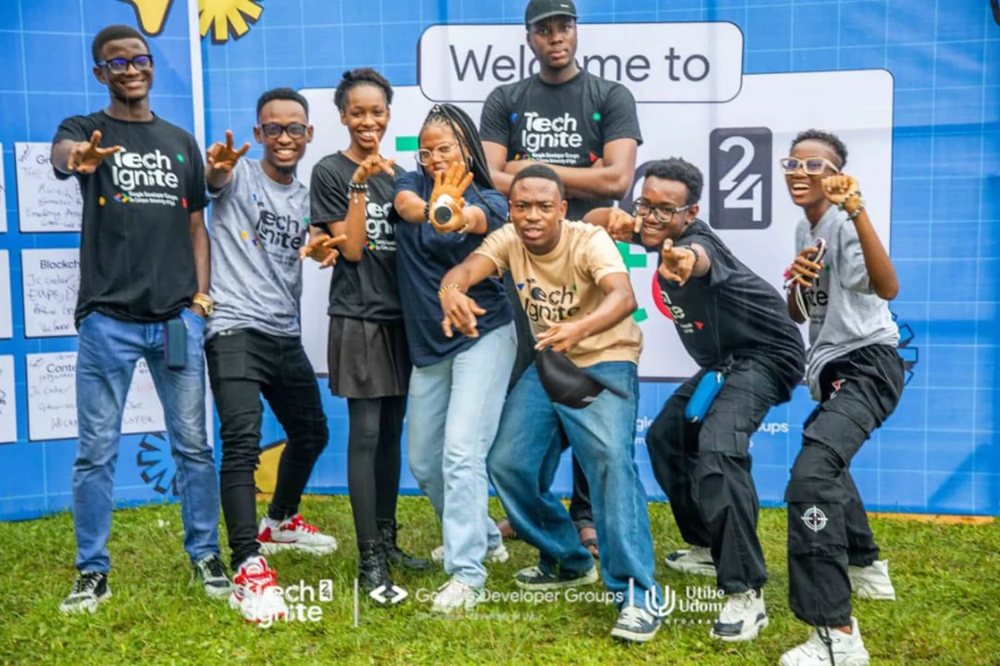
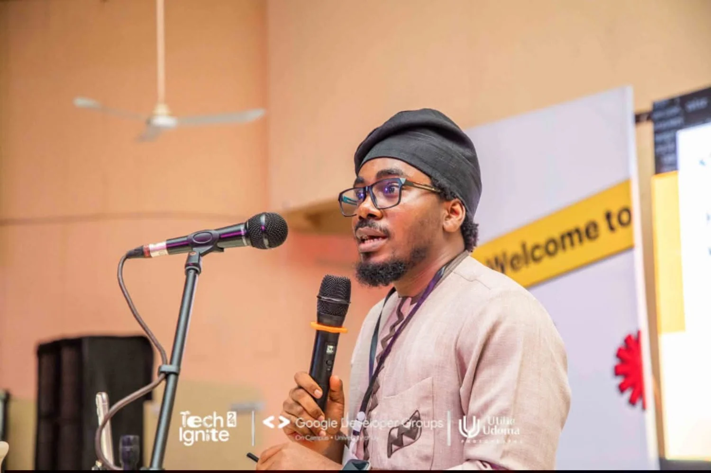
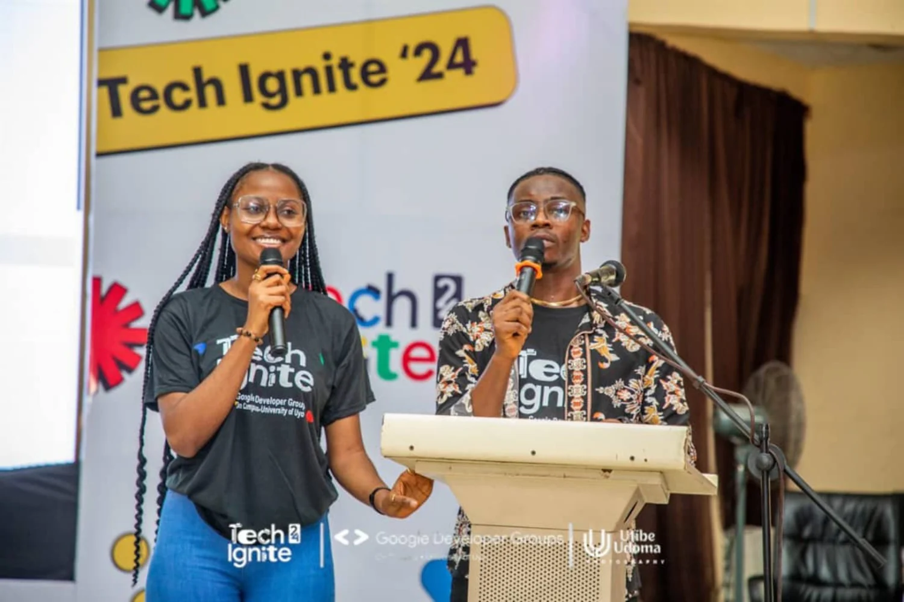
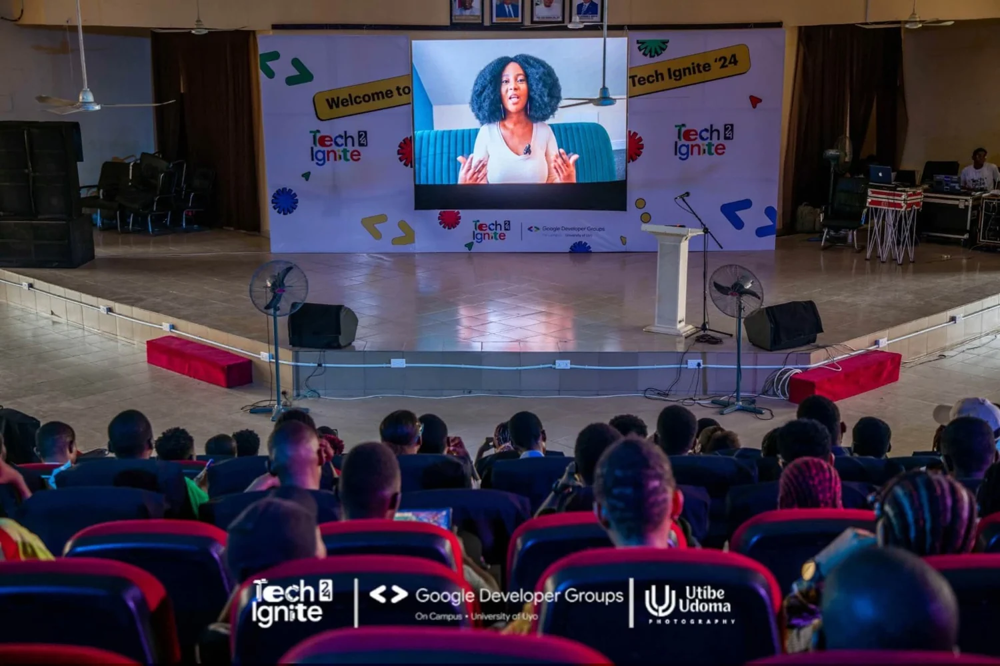

EXPERIENCE, COMMUNITY, POSSIBILITY
PROVEN
COMMUNITY.
NEW AMBITION.
TECHFORGE is a new Affidex initiative, built with leadership experience shaped through technology communities and practical event organisation in Uyo.

TECH IGNITE 2024 · GDG ON CAMPUS UYOBEHIND THE EXPERIENCE
Real people.
Real event experience.
Affidex Academy’s Managing Director, Edidiong Samuel, brings relevant developer-community leadership and event-organisation experience through involvement with GDG on Campus University of Uyo.

ON STAGE
LIVE CONVERSATIONS
COMMUNITY GATHERINGSThe photographs above document Tech Ignite 2024, organised by GDG on Campus, University of Uyo; included to illustrate leadership-team experience, not as an Affidex-owned event. Original photographs retain event and photographer credits. Reuse should be confirmed with the rights holders.
AFTER THE CONFERENCE
Two days can
open a bigger door.
The proposed AKWAFORGE 1000 training accelerator is a separate initiative that future industry partnerships may help make possible.
TECHFORGE 2027
Convening, demonstration, dialogue and relationship-building.
AKWAFORGE 1000
A proposed 12-week practical accelerator targeting 1,000 selected young Nigerians in eight advanced pathways.
Training programme funding and delivery partnerships would be negotiated independently of TECHFORGE event sponsorship.
Be part of the next chapter.
Explore an institutional, technical or corporate partnership with Affidex Academy.